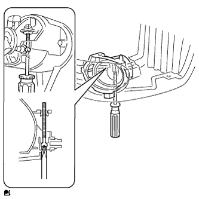

Front bumper adjustment |
| 1. Fog lamp optical axis adjustment work before adjusting |
Adjust the tire air pressure to the specified value.
Start the engine and charge the battery.
| 2. Fog lamp optical axis adjustment |
|  |
Turn the Eming screw from the bottom of the vehicle to adjust.
| 3. Fog lamp optical axis inspection |